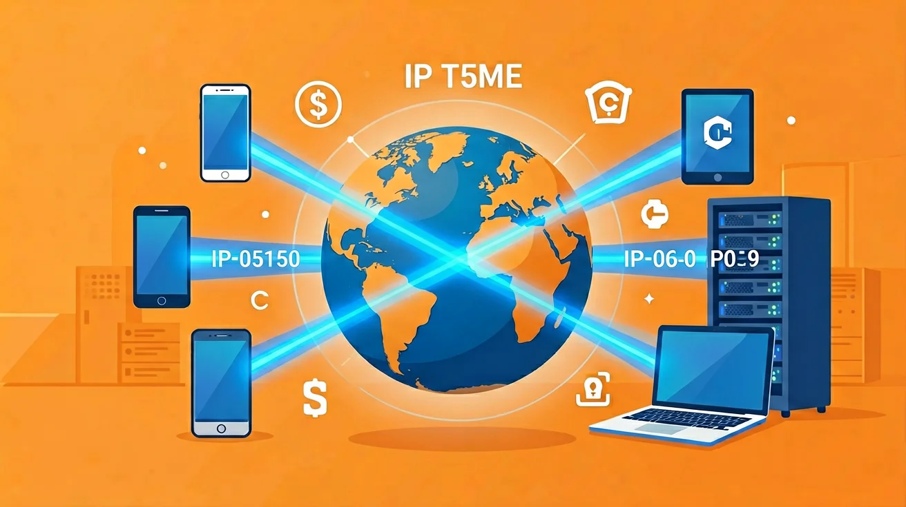

为什么学 · ABT
互联网结构与协议初识
你输入网址按回车，网页瞬间出现——中间发生了什么？
数据怎么从你的手机"飞"到千里之外的服务器，再"飞"回来？
这节课，拆开互联网的"黑盒子"，看看里面的结构与规则。
初中信息科技 · 七年级 · 互联网应用与创新
🌐 你在北京输入 www.baidu.com，
百度的服务器可能在上海、深圳、甚至美国——
数据怎么知道该往哪走？
又怎么保证不会"迷路"？
靠的是两样东西：结构（互联网怎么组织）和协议（通信的规则）。
结构回答"往哪走"，协议回答"怎么走"。
带着这个问题，拆开互联网的"黑盒子"。
🌍 互联网是什么？
互联网（Internet） = 全球数十亿台设备通过统一的规则连接起来的巨型网络。
它不是"一个"网络，而是"无数个"网络互相连接——
家里的 Wi-Fi、学校的校园网、公司的内网、运营商的骨干网……
它们通过路由器互相连接，组成"网络的网络"。
🔍 深层理解 · 比较它：互联网像"全球公路网"——村村通公路，镇镇有高速，县县连国道，最后汇入全国主干道。数据就像汽车，沿着公路网从 A 地开到 B 地。
🖥️ 客户端-服务器架构
📱 你的手机/电脑
客户端 Client
⇄
🖥️ 百度/腾讯的服务器
服务器 Server
客户端：发起请求的一方（你的浏览器、微信、抖音 App）
服务器：响应请求的一方（存着网页、视频、数据的强大计算机）
你刷网页 = 客户端发请求 → 服务器找数据 → 服务器发回数据 → 客户端显示
🔍 深层理解 · 迁移它：客户端像"顾客"，服务器像"餐厅后厨"。顾客点菜（发请求），后厨做菜（处理请求），服务员上菜（返回响应）。互联网绝大多数服务都是这个模式。
🔢 IP 地址与域名
IP 地址：每台联网设备的"门牌号"，如 14.215.177.38
域名：IP 地址的"好记的名字"，如 www.baidu.com
域名 → IP 地址的转换，由 DNS（域名系统）完成——就像查电话簿："张三" → 138xxxx1234。
🔍 深层理解 · 看见它：你不需要记 14.215.177.38，只需要记 www.baidu.com——DNS 服务器帮你"翻译"。没有 DNS，上网就像要背下全世界的电话号码。
🎮 互动：DNS 域名解析
点击域名，让 DNS 服务器帮你"翻译"成 IP 地址。
输入域名：www.example.com
DNS 服务器查询结果
93.184.216.34
✅ 浏览器现在知道该连接哪台服务器了！
📜 协议是什么？
协议（Protocol） = 通信双方事先约定好的规则。
就像两个人打电话：
① 先拨号（建立连接）→ ② 说"喂，你好"（打招呼）→ ③ 说正事（传输数据）→ ④ 说"再见"（结束连接）
如果一方说中文、一方说英文——无法沟通。
协议就是确保"双方说同一种语言"的规则。
🔍 深层理解 · 迁移它：HTTP 是"网页传输协议"，SMTP 是"邮件传输协议"，FTP 是"文件传输协议"——不同的"事"，用不同的"话"说。
🏗️ TCP/IP 四层模型
4应用层HTTP、DNS、SMTP——你直接用的协议
3传输层TCP、UDP——确保数据完整到达
2网络层IP——负责"找路"，把数据送到对方
1链路层Wi-Fi、网线——真正"跑路"的物理通道
🔍 深层理解 · 看见它：寄快递也是"分层"的——你写地址（应用层）→ 快递公司分拣（传输层）→ 货车走高速（网络层）→ 快递员送货上门（链路层）。每一层只关心自己的事，合起来完成大任务。
🎮 互动：数据包旅行记
点击"出发"，看一个数据包从你的手机到服务器的完整旅程。
📱你的手机应用层
→
📦TCP 打包传输层
→
🗺️IP 寻址网络层
→
📡Wi-Fi 发送链路层
→
🌐路由器网络层
→
🖥️服务器终点
当前位置：你的手机（应用层）
🌟 总结与分层作业
今天学会了：
✔ 互联网 = 无数网络通过统一规则连接起来的"网络的网络"
✔ 客户端-服务器架构：客户端发请求，服务器响应请求
✔ IP 地址是门牌号，域名是好记的名字，DNS 负责翻译
✔ 协议 = 通信双方约定的规则；TCP/IP 四层模型：应用层→传输层→网络层→链路层
🌱 基础
在电脑上打开命令行，输入 ping www.baidu.com，观察返回的 IP 地址。
🌿 提高
画出"你刷网页"的完整流程图，标出客户端、服务器、DNS、TCP/IP 各层的作用。
🌳 拓展
查阅资料：IPv4 和 IPv6 有什么区别？为什么需要 IPv6？写一段 100 字解释。